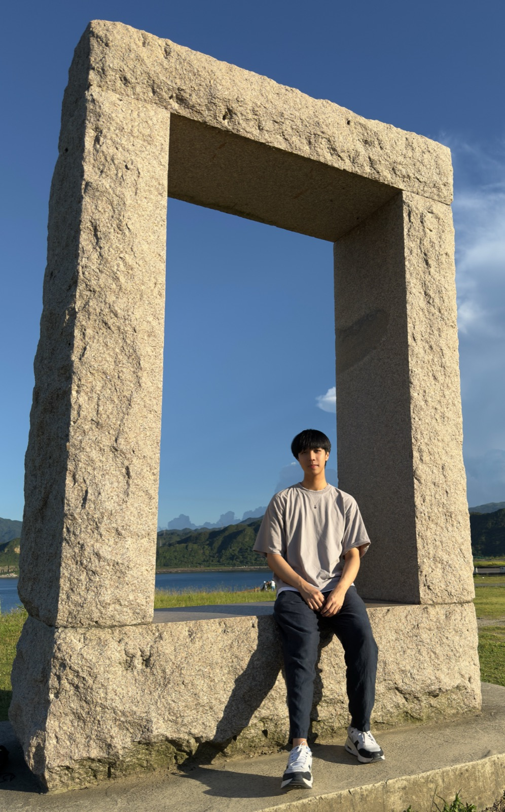
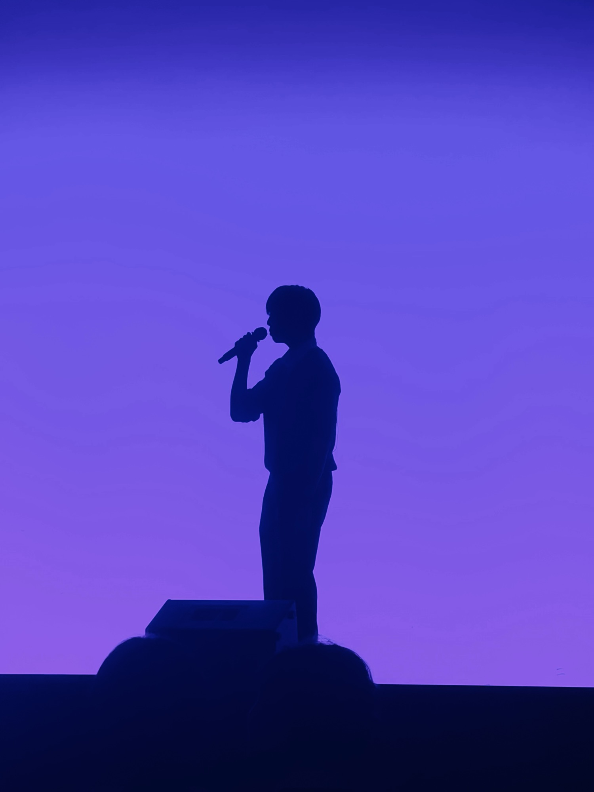
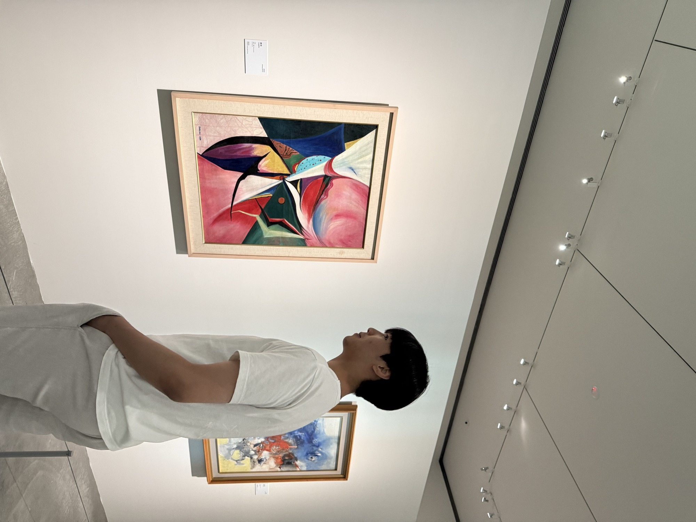

On ordinary meaning
I used to wait for a big answer. Then a small classroom in Jiangxi taught me something gentler: meaning can be made in what we choose to give.
A small personal page
I live in Hong Kong. I like singing, reading a bit of philosophy, and writing things down when a day feels worth keeping. This page is just a quiet corner to share that — nothing fancy.

About
I’m Kelton Yeung (楊皓程). Most days I’m somewhere between schoolwork, music, and long walks with my own thoughts.
I care about simple questions: what makes a day feel meaningful, how a song can hold a feeling, and how to be a little kinder than yesterday. I don’t have tidy answers. I just like staying curious.
If you’re here, thanks for stopping by. I hope something on this page feels warm, familiar, or gently interesting.
Music

Music has always felt close. Sometimes I share short singing clips on Threads — nothing polished, just whatever I felt like singing that day.
School gave me a few chances to perform. I’m grateful for those moments, but what I love most is quieter: a room, a melody, and time to mean it.
Notes
“Without music, life would be a mistake.”
A line I keep on my profile — after Nietzsche. It still feels true.
I used to wait for a big answer. Then a small classroom in Jiangxi taught me something gentler: meaning can be made in what we choose to give.
Some days I write. Some days I only listen. Both count. Both are a way of staying awake to my own life.
I sometimes post short poems and thoughts on Instagram. If you like that sort of thing, you’re welcome to read along — no pressure.
Photos

Hello
I’m always glad to talk about music, books, or whatever you’re curious about. No pitch — just people.